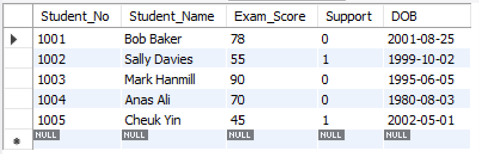

Normalisation and Data Build
Task: Below you will see a table with data in un-normalised form. You should normalise this data to 3rd Normal Form (3NF), showing each step of the process i.e., demonstrating 1NF, 2NF and 3NF.
There are levels of normalization called normal forms. These forms describe levels of data redundancy and anomalies in a database. Common forms are as follows:
1NF
- Each column in a table contains only atomic values
- Each value in a column is indivisible (atomic values)
- Each row needs a unique identifier (Primary Key)
2NF
- Ensure all non-key attributes in a table are dependent on the entire primary key.
- Ensures table contains only one type of data, each data item is represented only once.
3NF
- Remove data not directly related to the primary key and store it in a separate table.
- Ensures data is not duplicated across tables and each table contains data only related to the primary key.
Once the original table has been converted to 3NF there are now 3 tables:
- Students
- StudentCourse
- CourseTeacher
While I am sure I have followed the steps correctly, in the final 3NF form could possible not be complete. In the Students table, there are the attributes Exam Score and Support. While nothing has directly been indicated that these are related, it could be assumed that “Support” is dependent on “Exam Score” because there could be a score boundary that indicates whether a student needs support. With the information given however I think that the table can be seen as in 3NF.
Another detail noticed while uploading to the e portfolio is that the “Student Name” attribute in the students table could be split into first and second names to be in 1NF, however I think they can also be treated as an individual attribute when together, it does contradict the principle of atomic values though. Another possible issue with the final form is the “Teacher Name” attribute in the CourseTeacher table, this could possibly be split into name and title.
Data Build
The database for the above Normalised table was built using MySQL in MySQL Workbench. First the Schema needed to be created and was called StudentCourses. Then the individual tables were created, Students, CourseTeacher and StudentCourse. Data types, Primary Keys and Foreign keys were specified.
Once the tables were created, they were populated with the data and the database was exported. The code and tables generated are indicated below.
